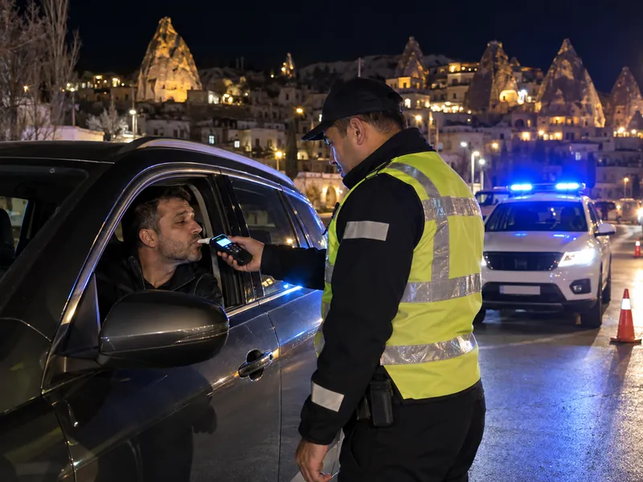

Trafik ve ÇevreKonu 15 / 1716 çıkmış soru
Trafik suçları, cezalar ve alkol
Trafik kurallarına aykırılıkta uygulanan yaptırımları; ceza puanı sistemini, sürücü belgesinin geri alınmasını ve iptalini, trafikten ve araç kullanmaktan meni, alkollü ve uyuşturucu etkisinde araç kullanmanın sonuçlarını Şubat 2026 değişiklikleriyle birlikte anlatır.

1Konu anlatımı
Akılda kalsın
- Trafikten men, yetkililerin aracın belgelerini alıp aracı belirli bir yere çekerek trafikten alıkoymasıdır.
- Hususi otomobil sürücüleri için alkol sınırı 0,50 promil, diğer araç sürücüleri için 0,20 promildir.
- Sınırın üzerinde alkollü araç kullandığı ilk kez tespit edilen sürücüye para cezası verilir, belgesi 6 ay geri alınır ve araç kullanmaktan men edilir.
- Uyuşturucu veya uyarıcı madde aldığı tespit edilen sürücü araç kullanmaktan men edilir, para cezası verilir ve belgesi iptal edilir.
- Bir yıl içinde 100 ceza puanını dolduran sürücünün belgesi 2 ay, aynı yıl ikinci kez dolduranın 4 ay geri alınır.
- Kırmızı ışıkta geçmek, görevli işaretlerine uymamak, sol şeridi sürekli işgal etmek ve seyir hâlinde elde telefon kullanmak para cezası ve ceza puanı gerektirir.
- Trafik idari para cezası tebliğden itibaren 15 gün içinde ödenirse dörtte bir indirim uygulanır.
Trafikte uygulanan yaptırımlar
Trafik kurallarına uymayan sürücülere ihlalin türüne göre bir veya birkaç yaptırım birlikte uygulanır:
- İdari para cezası: Kural ihlallerinde uygulanan para cezasıdır. Tutarlar kanunla belirlenir ve her yıl güncellenir.
- Ceza puanı: Para cezası uygulanan her ihlal için yönetmelikte belirlenen puan sürücünün siciline işlenir.
- Sürücü belgesinin geri alınması veya iptali: Belirli süre ya da kalıcı olarak araç kullanma yetkisinin kaldırılmasıdır.
- Trafikten men: Yetkililerce araçla ilgili belgelerin alınması ve aracın belirli bir yere çekilerek trafikten alıkonulmasıdır. Eksiklik giderilinceye kadar araç trafiğe çıkamaz.
- Araç kullanmaktan men: Sürücünün o anda araç kullanmasının engellenmesidir. Belgeleri tam olsa bile alkollü, uyuşturucu veya uyarıcı madde almış sürücüler araç kullanmaktan men edilir.
Kırmızı ışıkta geçmek, trafik görevlisinin ve diğer trafik işaretlerinin talimatlarına uymamak, çok şeritli yolda en sol şeridi sürekli işgal etmek ve seyir hâlinde cep telefonunu elde tutarak kullanmak gibi ihlallerde para cezası ve ceza puanı birlikte uygulanır. Trafik işaret ve levhalarına zarar verenlere ise zararın karşılığı ve onarım masrafları ödetilir.
Ceza puanı sistemi
| Durum | Sonuç |
|---|---|
| Bir yıl içinde 100 ceza puanını doldurmak | Belge 2 ay geri alınır, sürücü eğitime alınır |
| Aynı yıl içinde ikinci kez 100 puan | Belge 4 ay geri alınır; psiko-teknik değerlendirme ve psikiyatri muayenesi yapılır |
| Bir yıl içinde üçüncü kez 100 puan | Belge süresiz iptal edilir |
| Ölümlü kazaya asli kusurlu olarak sebep olmak | Belge 1 yıl geri alınır |
İlk kez belge alanlar 2 yıl süreyle aday sürücüdür. Aday sürücünün toplam ceza puanı 75'i aşarsa veya araç cinsine bakılmaksızın 0,20 promilin üzerinde alkollü araç kullanırsa belgesi iptal edilir.
Alkollü araç kullanma
Alkol, dikkat ve tepki süresini bozar; kandaki alkol miktarı arttıkça kaza riski katlanarak yükselir. Kandaki alkol miktarı hususi otomobil sürücüleri için 0,50 promilin, diğer araç sürücüleri (ticari, resmi araçlar vb.) için 0,20 promilin üzerinde olan sürücülerin araç kullanması yasaktır.
| Son 5 yıl içinde | Yaptırım |
|---|---|
| İlk tespit | İdari para cezası + belge 6 ay geri alınır |
| İkinci tespit | Daha yüksek para cezası + belge 2 yıl geri alınır, sürücü davranışlarını geliştirme eğitimi |
| Üçüncü ve sonraki tespitler | Daha yüksek para cezası + belge her seferinde 5 yıl geri alınır, psiko-teknik değerlendirme ve psikiyatri muayenesi |
Sınırın üzerinde alkollü olduğu tespit edilen sürücü ayrıca araç kullanmaktan men edilir; araç sürmesine izin verilmez. 1,00 promilin üzerinde alkollü sürücüler ile alkollüyken kazaya sebep olanlar hakkında ayrıca Türk Ceza Kanunu hükümleri uygulanır. Alkol veya uyuşturucu ölçümü yaptırmayan sürücüye yüksek tutarlı para cezası verilir ve belgesi 5 yıl süreyle geri alınır.
Uyuşturucu veya uyarıcı madde
Uyuşturucu veya uyarıcı madde almış kişinin hangi yolda ve hangi şeritte olursa olsun araç kullanması yasaktır. Bu kişi araç kullanmaktan men edilir; şüphe hâlinde sağlık kuruluşunda kan, tükürük veya idrar örneği alınır. Kullandığı tespit edilen sürücüye idari para cezası verilir, sürücü belgesi iptal edilir ve hakkında Türk Ceza Kanunu hükümleri uygulanır. Yeniden belge alabilmek için iptalden itibaren en az 5 yıl geçmesi, cezaların ödenmesi, psiko-teknik değerlendirme ve sağlık kurulu raporuyla kursa yeniden başlayıp sınavları geçmek gerekir.
Hız sınırlarının aşılması
Hız ihlallerinde para cezası, sınırın kaç km/s aşıldığına göre kademeli olarak artar. En yüksek kademelerde sürücü belgesi de geri alınır:
| Sınırın aşılma miktarı | Belge geri alma |
|---|---|
| Yerleşim yeri içinde 46–55, dışında 51–60 km/s | Her seferinde 30 gün |
| Yerleşim yeri içinde 56–65, dışında 61–70 km/s | Her seferinde 60 gün |
| Yerleşim yeri içinde 66, dışında 71 km/s ve üzeri | Her seferinde 90 gün |
Bir yıl içinde beşinci kez geri alınan belge, süre sonunda ancak psiko-teknik değerlendirme ve psikiyatri muayenesinden geçilirse iade edilir. Geri alınan belgelerin iadesi için verilen bütün trafik cezalarının ödenmiş olması gerekir.
Tedbirsiz ve saygısız sürüş
Su ve çamur sıçratmak, diğer yol kullanıcılarını korkutmak veya şaşırtmak, yola sigara izmariti ya da başka şey atmak, seyir hâlinde elde telefon kullanmak ve keyfi davranışlarla trafiği tehlikeye sokmak tedbirsiz ve saygısız sürüş sayılır ve cezalandırılır. Hız kurallarına uymak ve aşırı hızdan kaçınmak ise doğru davranıştır. Zorunluluk olmadan el freniyle aracı ani döndürmek veya kendi etrafında çevirmek ile motosikletle tek teker gibi akrobatik hareketler yapmak, sürücü belgesinin 60 gün geri alınmasını ve aracın 60 gün trafikten men edilmesini gerektiren ağır ihlallerdir.
Cezaların ödenmesi
Trafik idari para cezası tebliğden itibaren 15 gün içinde ödenirse cezanın dörtte biri indirilir. Bir ay içinde ödenmeyen cezalara her ay için %5 faiz uygulanır.
2Bu konunun soruları
MEB sınavlarında bu konudan çıkmış 16 soru (2 tanesi en az üç sınavda soruldu). Her soruda doğru cevabı ve açıklamasını hemen görürsünüz.
Hangi sorular?
Sıralama